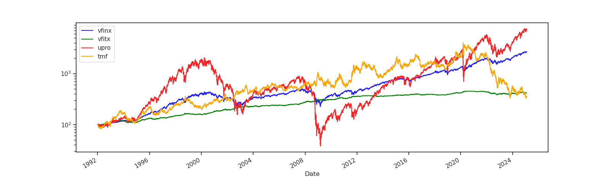
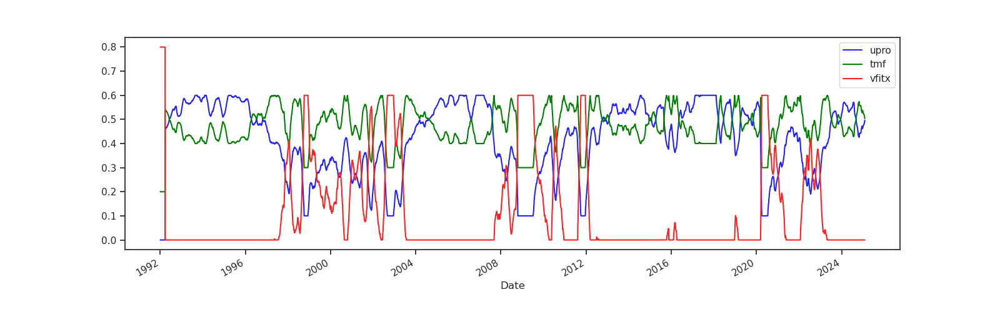
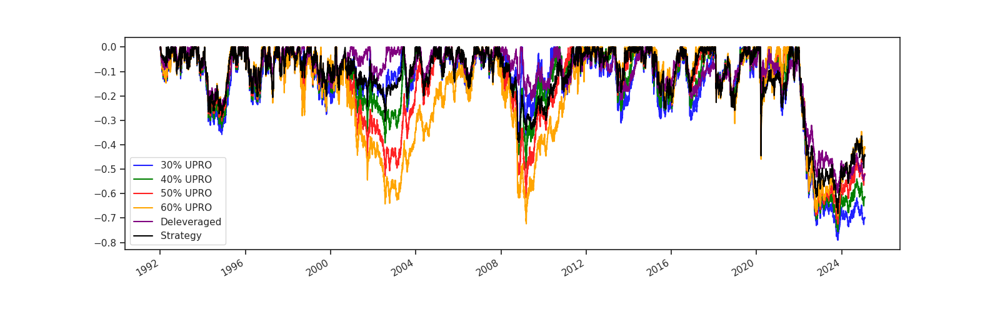
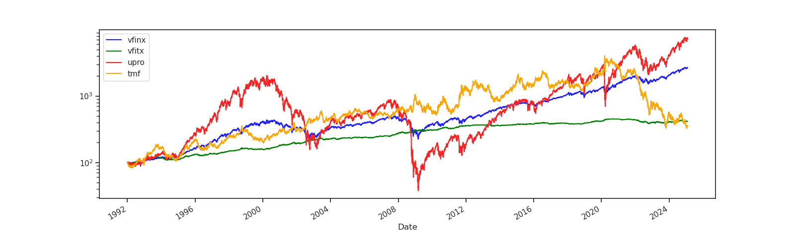
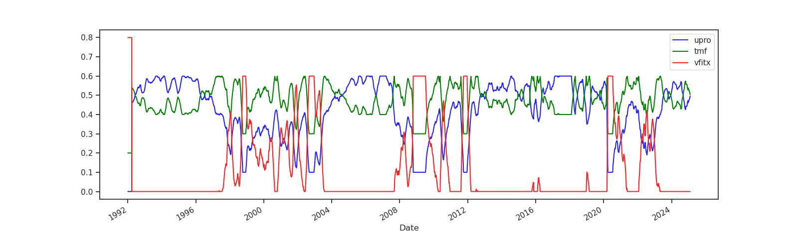
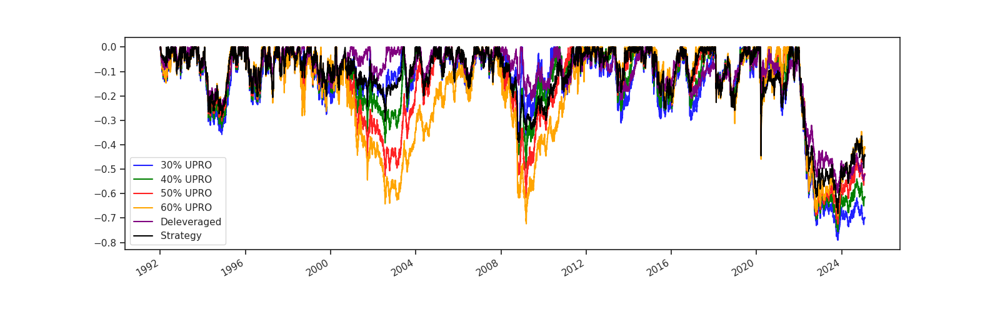
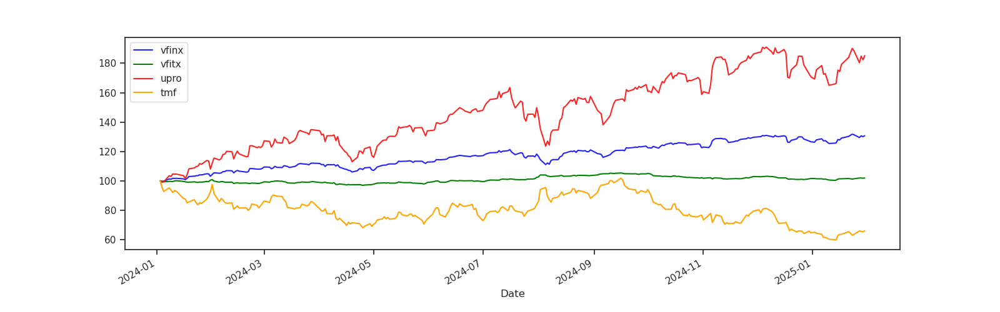
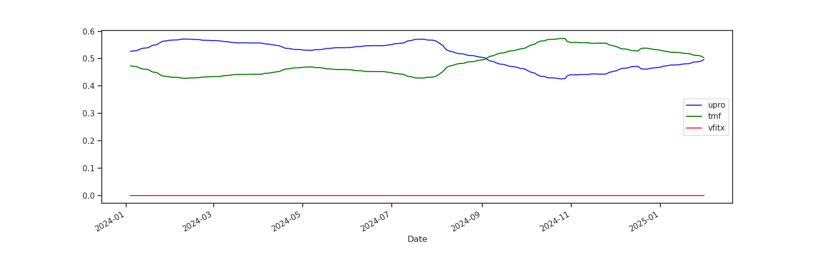

Backtest - Results Since 1992
Individual Asset Returns

VIX - 3 month average

Portfolio Allocation Weights

Portfolio Results

Portfolio Drawdown

This website describes a long-term investing strategy in the US stock market. It explains the thinking behind the strategy, shows how the strategy behaved since 1992 and provides all the information required to implement the strategy yourself. Just add water your own money and brokerage account.
This website does not provide investment advice. Whether you should follow this strategy with your hard earned own money and subsequently lose it all is yours to decide.
Also, Past performance is no guarantee of future results. Seriously.
Investing can be done in many, many different ways. In general it is advicable to invest in low-cost index funds and to combine asset classes to optimize risk/reward. A Simple Balanced Allocation Strategy that follows these principles would be to buy VBINX. From 12/31/1992 till 12/31/2019 VBINX had a total return of 738% or about 8.4%/year (CAGR). This is pretty good.
The greedy fools among us may not want to leave good enough alone and reach for more. Leveraged funds allows one to get both 3x the gains and 3x the losses of a regular index fund. Assuming that returns on a stock index fund will be positive over the long run, multiplying the gains is appealing.
A major concern is the magnification of losses. A 33% drop in a regular index fund could translate into a 99% drop in a 3x leveraged fund. Recovery from such a drop may take a lifetime. The unleveraged SPY index dropped about 50% during 2007-2009 (Great Financial Crisis aka GFC) while VBINX dropped about 34%.
VBINX allocates to about 60% stocks and 40% bonds. A leveraged portfolio of 3x 60% stocks (UPRO) and 3x 40% bonds (TMF) would have had a drawdown of about 72% during the GFC. This is actually a little bit better than the 99% drop one might have had expected. The main reason for the difference is that UPRO is rebalanced daily and that the market losses did not all happen on a single day.
Instead of using a 60/40 stock/bond ratio, there are other ratios that historically would have resulted in a more optimal risk/reward trade-off (higher Sharpe and/or Sortino ratio). A 40/60 stock/bond ratio would have been close to optimal but at the expense of the overall return. Since we are using leverage to boost the overall return the main concern is to find a favorable risk/reward point and more importantly a lower drawdown risk. A leveraged 40/60 portfolio would have had a drawdown of about 50% during the GFC.
In the Backtest section the return characteristics of leveraged 60/40, 50/50, 40/60 and 30/70 stock/bond portfolios are shown.
Although market drops can not be predicted in advance, overall market volatility can be predicted based on recent past market volatility. The VIX volatility index captures recent market volatility and provides a limited amount of additional information on future volatility. On average (but not always) the volatility predicted by VIX overstates the actual realized volatility for a given timeframe.
The strategy uses the concept of volatility targeting to roughly maintain a fixed amount of volatility in the portfolio. This means that the strategy will increase its stock allocation during periods of low volatility and decrease its stock allocation during periods of high volatility. In addition, the strategy will decrease its overall leverage during periods of very high volatility. The main purpose of this is not to increase the overall return but to reduce the chances of big drawdowns as those can harm longterm financial well being as well as our ability to sleep at night.
Instead of strictly aiming for a volatility target with mathematical precision the strategy uses an allocation function that produces allocation weights as function of a rolling 3 month VIX average. Specifically, with VIX average below 12 the function will use a 60/40 stock/bond allocation. With VIX above 12 but below 20, it will gradually shift to a 40/60 stock/bond allocation. Between 20 and 32 it will start decreasing the 3x leverage till the portfolio reaches a 1.8x 16/84 stock/bond allocation. The allocation function is visualized in the Implementation section.



At creation and at each rebalancing, a portfolio is allocated to UPRO, TMF and VFITX according to the latest target asset allocation weights that can be found at the bottom of the screen.
Rebalancing should be done about once per quarter. Doing it monthly is fine as well.
The VFITX mutual fund was chosen because it has a long history that allows backtesting, but in practice it can be replaced by a more easily tradable ETF such as VGIT or IEF.
The asset allocation weights are calculated from the 3 month VIX average as follow:



